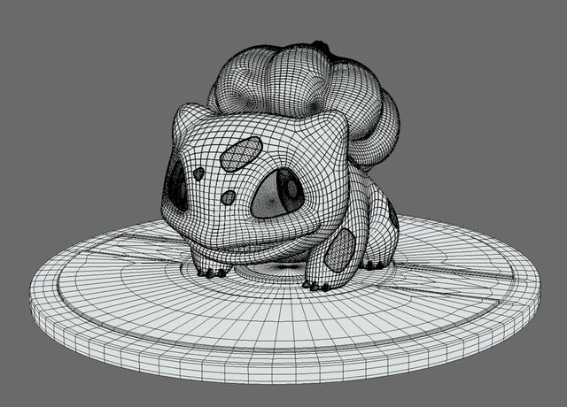
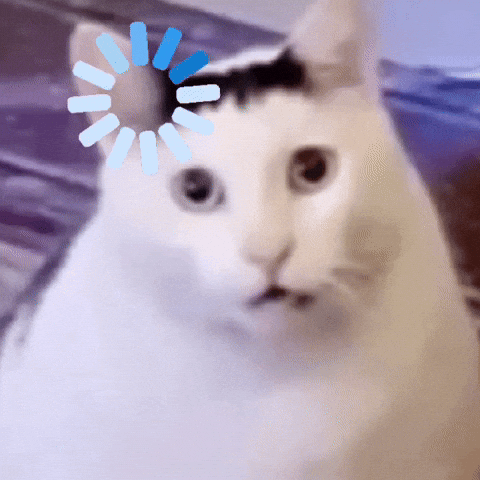

AndrewId: sbandred Name: Sri Datta Bandreddi
Prompt:
Write me a joke about 3d point mesh clouds
ChatGPT’s answer:
Why did the 3D point cloud get kicked out of the mesh party? It had no faces, no edges, and absolutely no connections.
This is a Bulbasaur 3D model, a pokemon with 3D shape in a mesh geometry.

Source: Bulbasaur on Sketchfab
My state as i go through my masters at CMU :)

Source: Lemme Think GIF on GIPHY by @brown_giphy